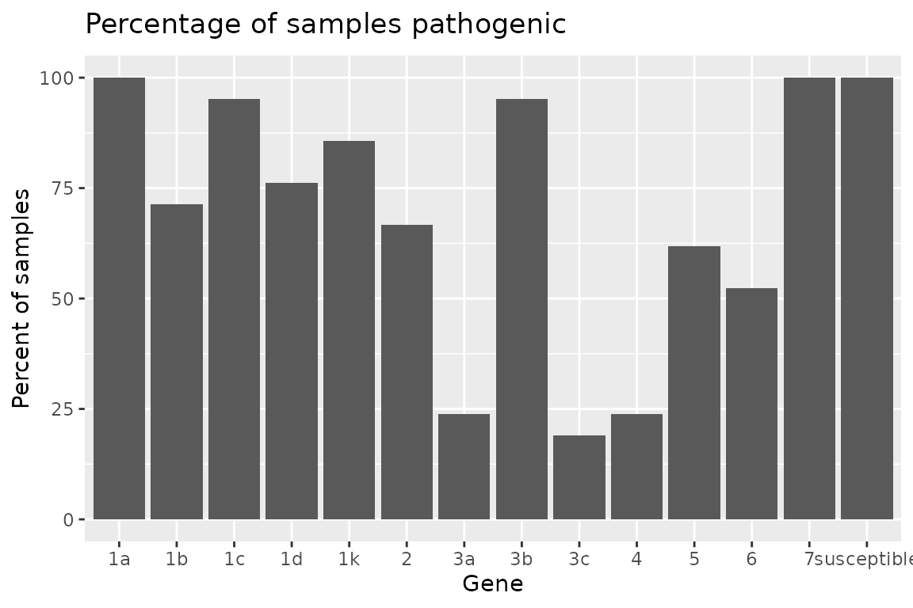
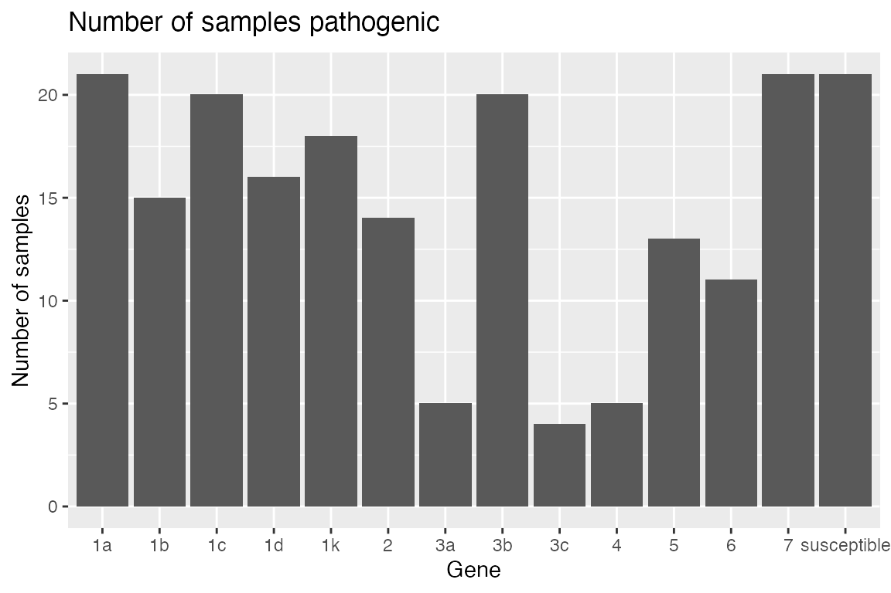
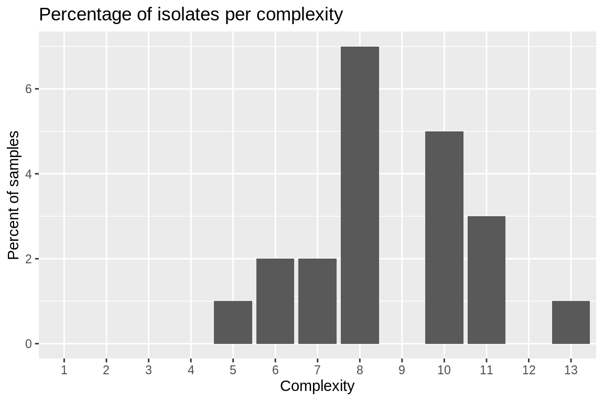
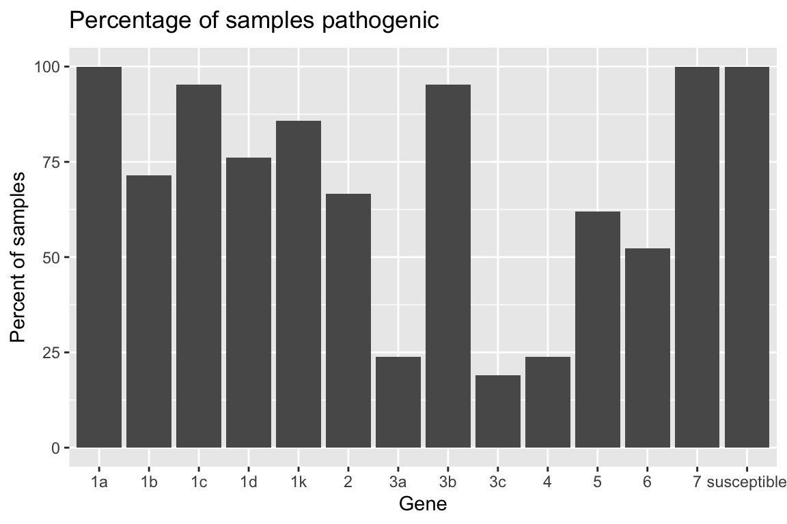
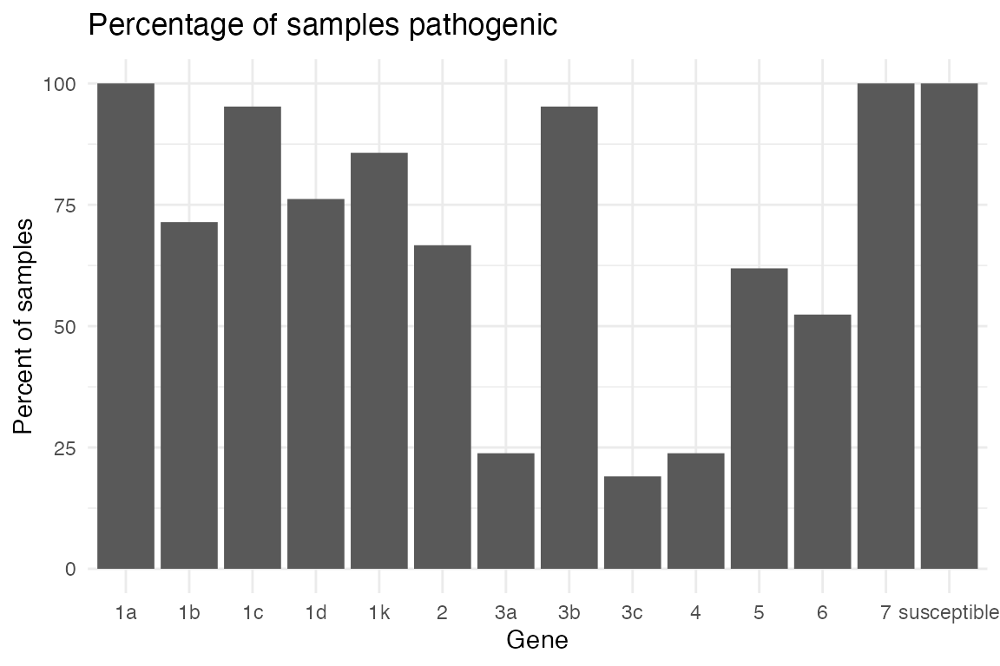
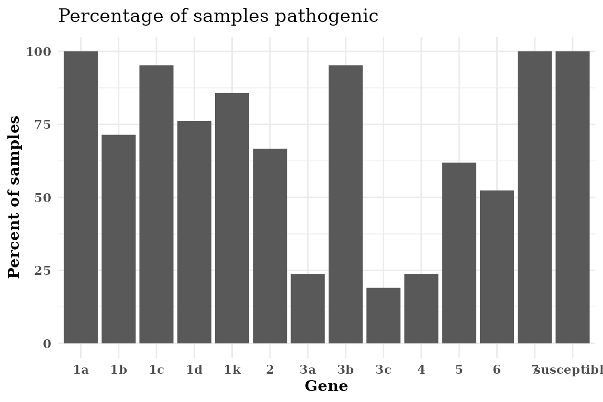
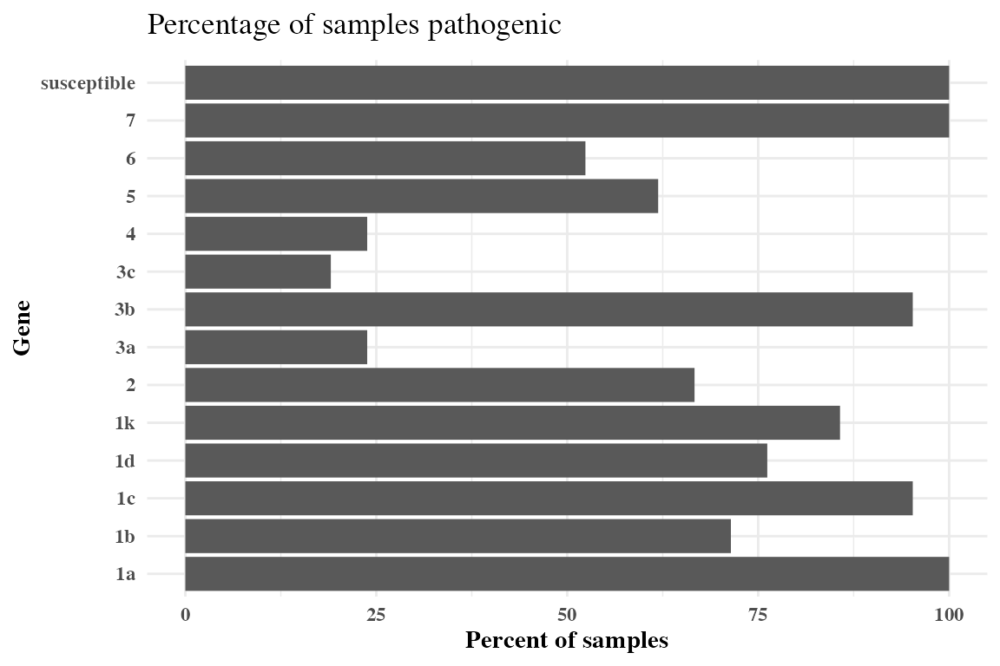
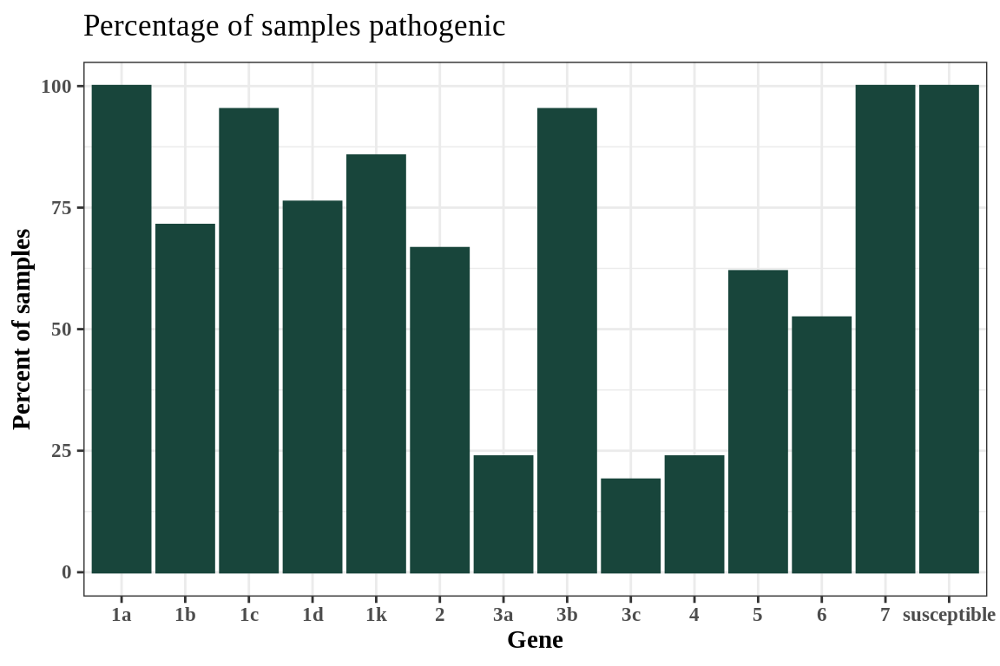
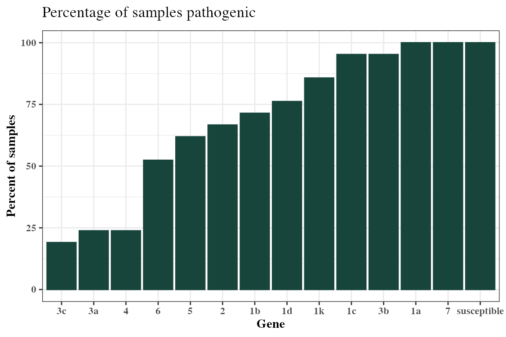

vignettes/hagis.Rmd
hagis.RmdThe following examples are based on a dataset from Michigan State University Phytophthora sojae surveys for soybean phytophthora root rot pathotyping efforts.
First you’ll want to load in your data set, for right now let’s use a
practice data set made for the hagis package, named
P_sojae_survey. The data set is available in your R session
automatically when you load the hagis package.
library("hagis")
head(P_sojae_survey)
#> Isolate Line Rps Total HR (1) Lesion (2)
#> 1: 1 Williams susceptible 10 0 0
#> 2: 1 Harlon Rps 1a 10 4 0
#> 3: 1 Harosoy 13xx Rps 1b 8 0 0
#> 4: 1 L75-3735 Rps 1c 10 10 0
#> 5: 1 PI 103091 Rps 1d 9 2 0
#> 6: 1 Williams 82 Rps 1k 10 0 0
#> Lesion to cotyledon (3) Dead (4) total.susc total.resis perc.susc perc.resis
#> 1: 0 10 10 0 100 0
#> 2: 0 6 6 4 60 40
#> 3: 0 8 8 0 100 0
#> 4: 0 0 0 10 0 100
#> 5: 1 6 7 2 78 22
#> 6: 0 10 10 0 100 0We see in the gene column that each gene is prepended
with “Rps”. We can remove this to make the graphs cleaner and report the
genes in tables as we would in a manuscript. Note that this will work
for any string you enter as the first value, pattern. The
second string, replacement, is the replacement value, the
third, x, is where to look and make the changes.
P_sojae_survey$Rps <-
gsub(pattern = "Rps ",
replacement = "",
x = P_sojae_survey$Rps)
head(P_sojae_survey)
#> Isolate Line Rps Total HR (1) Lesion (2)
#> 1: 1 Williams susceptible 10 0 0
#> 2: 1 Harlon 1a 10 4 0
#> 3: 1 Harosoy 13xx 1b 8 0 0
#> 4: 1 L75-3735 1c 10 10 0
#> 5: 1 PI 103091 1d 9 2 0
#> 6: 1 Williams 82 1k 10 0 0
#> Lesion to cotyledon (3) Dead (4) total.susc total.resis perc.susc perc.resis
#> 1: 0 10 10 0 100 0
#> 2: 0 6 6 4 60 40
#> 3: 0 8 8 0 100 0
#> 4: 0 0 0 10 0 100
#> 5: 1 6 7 2 78 22
#> 6: 0 10 10 0 100 0This practice data set contains 21 isolates’, Isolate,
virulence data on a set of 14 differential soybean cultivars,
Line. This package uses the percentage of
susceptible, inoculated, plants to determine effective resistance genes,
pathotype diversity and frequency, as well as individual isolates
pathotypes.
To help ensure that the proper data are used in calculations, the user is asked to provide some information that instruct hagis about what data to use.
We have striven to make hagis as intuitive to use as
possible. Part of that means that we have used the same arguments for
the three main functions, summarize_gene(),
calculate_complexities() and
calculate_diversities(). Each of these functions take the
same arguments:
x this is your data set name, e.g.
P_sojae_survey from the example above, allows for the
function to identify where it will be pulling these columns (and their
associated row values) from to use (i.e. your data collection
Excel spreadsheet)
cutoff this value sets the cutoff for susceptible
reactions. For example, cutoff = 60 means that all genes
with 60% or more of the plants rated susceptible will be treated as
susceptible. You can change this to whatever percentage you require for
your study.
control specifies the value used in the
gene column to denote a susceptible control used in the
study
sample specifies the column header for the column
which identifies the isolates tested
gene specifies the column header for the column
which identifies the genes tested
perc_susc specifies the column header for the column
which identifies the percent susceptible plants for each gene
Ordinarily you would use functions in hagis or other R packages like this:
Rps.summary <- summarize_gene(
x = P_sojae_survey,
cutoff = 60,
control = "susceptible",
sample = "Isolate",
gene = "Rps",
perc_susc = "perc.susc"
)However, because the functions share arguments we can create a
list() of arguments and share them with some of the
functions from hagis. First, we make a list of the arguments
that summarize_gene(), calculate_diversities()
and calculate_complexities() use that specify our inputs
based on our example data:
hagis_args <- list(
x = P_sojae_survey,
cutoff = 60,
control = "susceptible",
sample = "Isolate",
gene = "Rps",
perc_susc = "perc.susc"
)Now that we have a list of arguments, we can now save time entering the same data for each function and also avoid typos or entering different cutoff values, etc. between the functions.
Below is an example of tables and graphics that can be produced using
the summarize_gene() function to identify effective
resistance genes tested against the sampled Phytophthora sojae
population.
The summarize_gene() function allows you to produce a
detailed table showing the number of virulent isolates
(N_virulent_isolates), as well as offering a percentage of
the isolates tested which are pathogenic on each gene
(percent_pathogenic).
Rps.summary <- do.call(summarize_gene, hagis_args)
Rps.summary
#> gene N_virulent_isolates percent_pathogenic
#> 1: susceptible 21 100.00000
#> 2: 1a 21 100.00000
#> 3: 1b 15 71.42857
#> 4: 1c 20 95.23810
#> 5: 1d 16 76.19048
#> 6: 1k 18 85.71429
#> 7: 2 14 66.66667
#> 8: 3a 5 23.80952
#> 9: 3b 20 95.23810
#> 10: 3c 4 19.04762
#> 11: 4 5 23.80952
#> 12: 5 13 61.90476
#> 13: 6 11 52.38095
#> 14: 7 21 100.00000Using the pander library we can make the table much more attractive in RMarkdown.
| gene | N_virulent_isolates | percent_pathogenic |
|---|---|---|
| susceptible | 21 | 100 |
| 1a | 21 | 100 |
| 1b | 15 | 71.43 |
| 1c | 20 | 95.24 |
| 1d | 16 | 76.19 |
| 1k | 18 | 85.71 |
| 2 | 14 | 66.67 |
| 3a | 5 | 23.81 |
| 3b | 20 | 95.24 |
| 3c | 4 | 19.05 |
| 4 | 5 | 23.81 |
| 5 | 13 | 61.9 |
| 6 | 11 | 52.38 |
| 7 | 21 | 100 |
hagis also provides functions to quickly graph your data
using ggplot2.
Two functions are provided to plot the summary depending on your
needs. If you need the frequency, use
autoplot(Rps.summary, type = "percentage"), or if you
desire the distribution
autoplot(Rps.summary, type = "count"). Both return the same
graph, only the y-axis change; percent for frequency and n for
distribution.
autoplot(Rps.summary, type = "percentage")
autoplot(Rps.summary, type = "count")
Pathotype frequency, distribution as well as statistics such as mean
pathotype complexity can be calculated using the
calculate_complexities() function. This function will
return a list() of two data.table() objects,
grouped_complexities and
individual_complexities. grouped_complexities
returns a list() as a data.table() object
showing the frequency and distribution of pathotype complexities for the
sampled population. individual_complexities() returns a
list() as a data.table() object showing each
individual isolates pathotype complexity. An isolates pathotype
complexity refers to the number of resistance genes that it is able to
overcome and cause disease on, i.e., a pathotype complexity of
“7” would mean that isolate can cause disease on 7 different resistance
genes.
complexities <- do.call(calculate_complexities, hagis_args)
complexities
#>
#> Grouped Complexities
#> complexity frequency distribution
#> 1: 1 0 0
#> 2: 2 0 0
#> 3: 3 0 0
#> 4: 4 0 0
#> 5: 5 1 1
#> 6: 6 2 2
#> 7: 7 2 2
#> 8: 8 7 7
#> 9: 9 0 0
#> 10: 10 5 5
#> 11: 11 3 3
#> 12: 12 0 0
#> 13: 13 1 1
#>
#>
#> Individual Complexities
#> sample N_samp
#> 1: 1 10
#> 2: 2 10
#> 3: 3 10
#> 4: 4 8
#> 5: 5 8
#> 6: 6 8
#> 7: 7 8
#> 8: 8 8
#> 9: 9 6
#> 10: 10 5
#> 11: 11 6
#> 12: 12 8
#> 13: 13 7
#> 14: 14 8
#> 15: 15 11
#> 16: 16 7
#> 17: 17 10
#> 18: 18 10
#> 19: 19 11
#> 20: 20 11
#> 21: 21 13
#> sample N_sampOnce again, using pander we can make these tables much more
attractive in RMarkdown. Since complexities is a
list() object, we can refer to each object directly by name
and print them as follows.
pander(complexities$grouped_complexities)| complexity | frequency | distribution |
|---|---|---|
| 1 | 0 | 0 |
| 2 | 0 | 0 |
| 3 | 0 | 0 |
| 4 | 0 | 0 |
| 5 | 1 | 1 |
| 6 | 2 | 2 |
| 7 | 2 | 2 |
| 8 | 7 | 7 |
| 9 | 0 | 0 |
| 10 | 5 | 5 |
| 11 | 3 | 3 |
| 12 | 0 | 0 |
| 13 | 1 | 1 |
pander(complexities$indvidual_complexities)| sample | N_samp |
|---|---|
| 1 | 10 |
| 2 | 10 |
| 3 | 10 |
| 4 | 8 |
| 5 | 8 |
| 6 | 8 |
| 7 | 8 |
| 8 | 8 |
| 9 | 6 |
| 10 | 5 |
| 11 | 6 |
| 12 | 8 |
| 13 | 7 |
| 14 | 8 |
| 15 | 11 |
| 16 | 7 |
| 17 | 10 |
| 18 | 10 |
| 19 | 11 |
| 20 | 11 |
| 21 | 13 |
Using summary() will return the mean, standard error
(se) and standard deviation (sd) for pathotypes of a complexities
object.
| Mean | SD | SE |
|---|---|---|
| 8.714 | 2.004 | 0.4372 |
Two functions are provided to plot the complexities depending on your
needs. If you need the frequency, use
autoplot(complexties, type = "percentage"), or if you
desire the distribution
autoplot(complexities, type = "count"). Both return the
same graph, only the y-axis change; percent for frequency and n for
distribution.
autoplot(complexities, type = "percentage")
autoplot(complexities, type = "count")Diversity indices are extremely useful when trying to identify
differences between two populations. Here, pathotype diversities are
calculated for the isolate population using the
calculate_diversities() function. Likewise, individual
isolates’ pathotypes, number of isolates used in the study, number of
pathotypes within the study are calculated.
Five diversity indices are calculated when calling
calculate_diversities().
Simple diversity index, which will show the proportion of unique pathotypes to total samples. As the values gets closer to 1, there is greater diversity in pathoypes within the population. Simple diversity is calculated as: \[D = \frac{Np}{Ns}\] where \(Np\) is the number of pathotypes and \(Ns\) is the number of samples.
Gleason diversity index, an alternate version of Simple diversity index, is less sensitive to sample size than the Simple index. \[D = \frac{ (Np - 1) }{ log(Ns)}\] Where \(Np\) is the number of pathotypes and \(Ns\) is the number of samples.
Shannon diversity index is typically between 1.5 and 3.5, as richness and evenness of the population increase, so does the Shannon index value. \[D = -\sum_{i = 1}^{R} p_i \log p_i\] Where \(p_i\) is the proportional abundance of species \(i\).
Simpson diversity index values range from 0 to 1, 1 represents high diversity and 0 represents no diversity. Where diversity is calculated as: \[D = \sum_{i = 1}^{R} p_i^2\]
Evenness ranges from 0 to 1, as the Evenness value approaches 1, there is a more even distribution of each pathoype’s frequency within the population. Where Evenness is calculated as: \[D = \frac{H'}{log(Np)}\] where \(H'\) is the Shannon diversity index and \(Np\) is the number of pathotypes.
diversity <- do.call(calculate_diversities, hagis_args)
diversity
#>
#> hagis Diversities
#>
#> Number of Samples 21
#> Number of Pathotypes 19
#>
#> Indices
#> Simple 0.9047619
#> Gleason 5.912257
#> Shannon 2.912494
#> Simpson 0.9433107
#> Evenness 0.9891509Or using pander for reporting, a nice table is
generated.
pander(diversity)| Simple | Gleason | Shannon | Simpson | Evenness |
|---|---|---|---|---|
| 0.9048 | 5.912 | 2.912 | 0.9433 | 0.9892 |
To generate a table of diversities, use
diversities_table(). hagis will automatically
create a pander object for you. This is because it is much
easier to read the resulting table in the console than the raw
data.frame and insert into reports.
diversities_table(diversity)| Frequency | Pathotype |
|---|---|
| 1 | 1a, 1b, 1c, 1d, 1k, 2, 3a, 3b, 3c, 4, 5, 6, 7 |
| 1 | 1a, 1b, 1c, 1d, 1k, 2, 3a, 3b, 3c, 5, 7 |
| 1 | 1a, 1b, 1c, 1d, 1k, 2, 3a, 3b, 3c, 6, 7 |
| 1 | 1a, 1b, 1c, 1d, 1k, 2, 3b, 4, 5, 6, 7 |
| 1 | 1a, 1b, 1c, 1d, 1k, 2, 3b, 4, 5, 7 |
| 1 | 1a, 1b, 1c, 1d, 1k, 2, 3b, 4, 6, 7 |
| 2 | 1a, 1b, 1c, 1d, 1k, 2, 3b, 7 |
| 1 | 1a, 1b, 1c, 1d, 1k, 2, 6, 7 |
| 1 | 1a, 1b, 1c, 1d, 1k, 3a, 3b, 5, 6, 7 |
| 1 | 1a, 1b, 1c, 1d, 1k, 3b, 7 |
| 1 | 1a, 1b, 1c, 1k, 2, 3b, 3c, 4, 6, 7 |
| 1 | 1a, 1b, 1c, 1k, 3b, 5, 6, 7 |
| 1 | 1a, 1b, 1c, 1k, 3b, 5, 7 |
| 1 | 1a, 1b, 1d, 1k, 2, 3a, 3b, 5, 6, 7 |
| 2 | 1a, 1c, 1d, 1k, 2, 3b, 5, 7 |
| 1 | 1a, 1c, 1d, 1k, 2, 3b, 6, 7 |
| 1 | 1a, 1c, 1d, 3b, 5, 7 |
| 1 | 1a, 1c, 3b, 5, 6, 7 |
| 1 | 1a, 1c, 3b, 5, 7 |
To generate a table of individual pathotypes, use
individual_pathotypes(). Here again, hagis
provides a pander object for ease of use.
individual_pathotypes(diversity)| Sample | Pathotype |
|---|---|
| 1 | 1a, 1b, 1d, 1k, 2, 3a, 3b, 5, 6, 7 |
| 10 | 1a, 1c, 3b, 5, 7 |
| 11 | 1a, 1c, 3b, 5, 6, 7 |
| 12 | 1a, 1b, 1c, 1d, 1k, 2, 6, 7 |
| 13 | 1a, 1b, 1c, 1d, 1k, 3b, 7 |
| 14 | 1a, 1b, 1c, 1k, 3b, 5, 6, 7 |
| 15 | 1a, 1b, 1c, 1d, 1k, 2, 3b, 4, 5, 6, 7 |
| 16 | 1a, 1b, 1c, 1k, 3b, 5, 7 |
| 17 | 1a, 1b, 1c, 1d, 1k, 2, 3b, 4, 5, 7 |
| 18 | 1a, 1b, 1c, 1d, 1k, 3a, 3b, 5, 6, 7 |
| 19 | 1a, 1b, 1c, 1d, 1k, 2, 3a, 3b, 3c, 6, 7 |
| 2 | 1a, 1b, 1c, 1k, 2, 3b, 3c, 4, 6, 7 |
| 20 | 1a, 1b, 1c, 1d, 1k, 2, 3a, 3b, 3c, 5, 7 |
| 21 | 1a, 1b, 1c, 1d, 1k, 2, 3a, 3b, 3c, 4, 5, 6, 7 |
| 3 | 1a, 1b, 1c, 1d, 1k, 2, 3b, 4, 6, 7 |
| 4 | 1a, 1c, 1d, 1k, 2, 3b, 5, 7 |
| 5 | 1a, 1c, 1d, 1k, 2, 3b, 6, 7 |
| 6 | 1a, 1c, 1d, 1k, 2, 3b, 5, 7 |
| 7 | 1a, 1b, 1c, 1d, 1k, 2, 3b, 7 |
| 8 | 1a, 1b, 1c, 1d, 1k, 2, 3b, 7 |
| 9 | 1a, 1c, 1d, 3b, 5, 7 |
Since hagis uses ggplot2 to generate its plots,
you can easily theme the outputs using common ggplot2
themes and other options provided by hagis directly through
autoplot().

Use ggplot2’s theme_minimal() theme.
Rps.plot <- Rps.plot +
theme_minimal()
Rps.plot
Set the font to be a bold-face serif family font.
Rps.plot <- Rps.plot +
theme(text = element_text(face = "bold",
family = "serif"))
Rps.plot
If your Rps gene names are too long, flipping the axis can make the graph more legible without rotating the x-axis labels.
Rps.plot <- Rps.plot +
coord_flip()
Rps.plot
You can use named, e.g. “red”, “yellow”, “blue”, colors in R
or you can use custom hexadecimal color codes. Illustrated below is
using Michigan State University (MSU) Green, hex code #18453b, using
theme_bw() with a serif font.
autoplot(Rps.summary,
type = "percentage",
color = "#18453b") +
theme_bw() +
theme(text = element_text(face = "bold",
family = "serif"))
You can sort the x-axis of any graph produced using
autoplot() in an ascending or
descending order using the order parameter in
autoplot().
autoplot(Rps.summary,
type = "percentage",
color = "#18453b",
order = "ascending") +
theme_bw() +
theme(text = element_text(face = "bold",
family = "serif"))